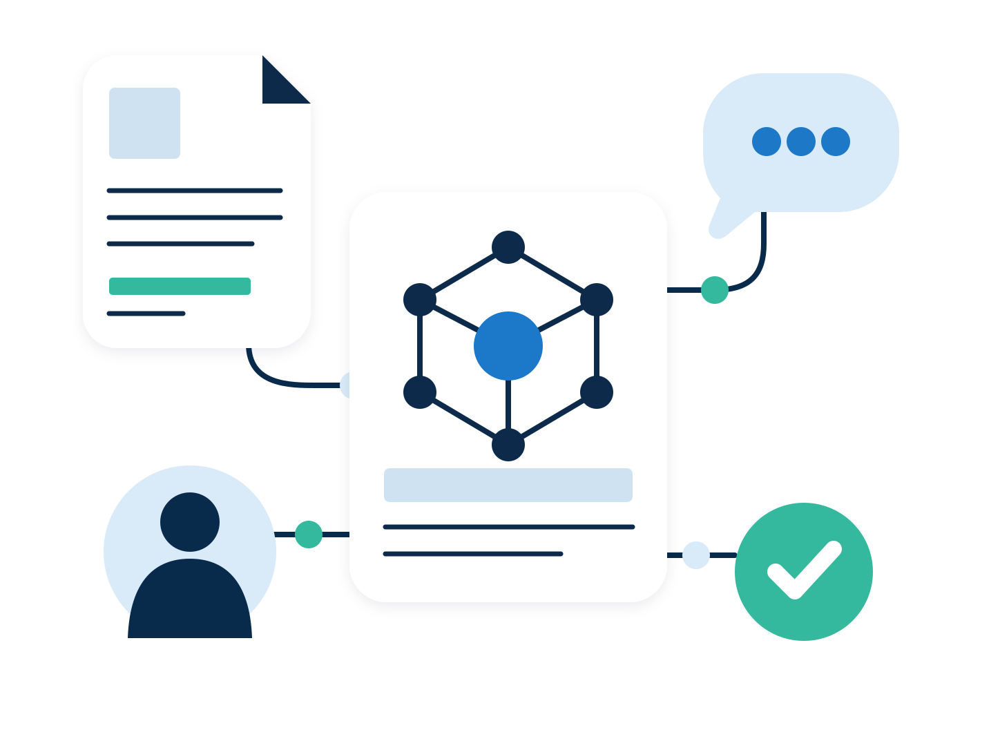

Preserve what is known
Capture evidence, user needs, civic needs, behaviours, pain points, insights and value dimensions as persistent knowledge objects.
Open knowledge infrastructure for public-service needs, evidence, pain and decisions.
View the repository Read the strategic vision
The repository turns fragmented research, lived experience, public reports and operational knowledge into traceable objects that can support better service, policy and operational decisions.
Capture evidence, user needs, civic needs, behaviours, pain points, insights and value dimensions as persistent knowledge objects.
Help design histories, policy records and operational decisions reference stable knowledge objects instead of rewriting them.
Show where evidence is missing, where pain blocks value, and where public-service outcomes remain unsupported.
Public services need better outcomes, not just better documentation. Civic design intelligence helps teams understand what people need, where systems create burden, and which decisions are most likely to improve public value.
Connect evidence and lived experience to the outcomes services are trying to change, so work is guided by impact rather than assumptions or organisational habit.
Make it easier to see where needs are unsupported, where pain blocks value, and where policy or service attention could make the greatest difference.
Create an auditable link between what is known, what is contested and what decisions are made, so public-service learning can compound over time.
AI makes this approach practical. Public-service knowledge is usually spread across research reports, lived experience, complaints, policy documents and operational data. AI can help structure and connect that material at pace, while the repository keeps the work governed, traceable and reviewable.
AI helps turn varied source material into linked evidence, needs, behaviours, pain points and insights without making AI the source of truth.
Objects keep their status, evidence basis, uncertainty and review state visible, so useful AI support does not become unmanaged synthesis.
AI can help structure and test understanding, but people remain responsible for interpretation, validation and public-service decisions.
These figures are generated from repository folders and object metadata where available. Missing metadata is counted explicitly rather than inferred as reviewed or validated.
The page treats missing metadata as an operational signal. It does not promote objects to reviewed or validated status.
Research, public reports, inspections, complaints, operational data, professional knowledge and lived experience.
Status-labelled user needs, civic needs, behaviours, pain points, insights, value dimensions and opportunities.
Design histories, policy records and service decisions that reference stable knowledge objects.